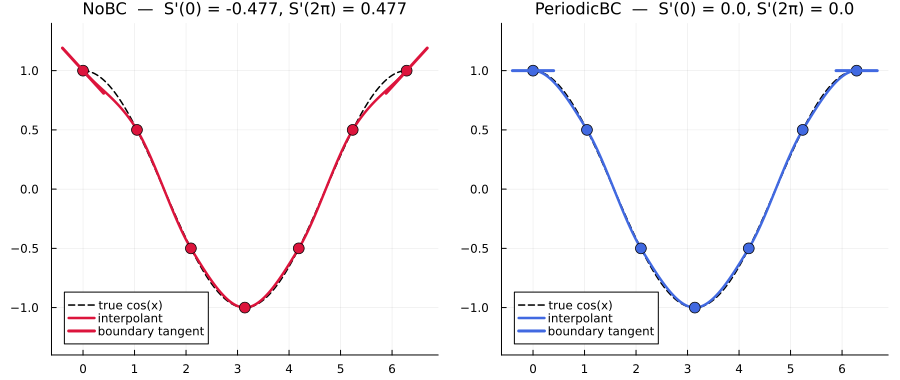

PeriodicBC
PeriodicBC marks an interpolation axis as periodic. Depending on the method family, it changes how slopes, stencils, or spline coefficients are constructed at the seam — not just how out-of-domain queries are handled.
| Method family | What PeriodicBC guarantees at the seam |
|---|---|
constant_interp, linear_interp | C⁰ continuity across the seam (value matches; nothing else changes). |
pchip_interp, cardinal_interp, akima_interp | C¹ continuity across the seam (value and slope match). |
cubic_interp | C² continuity across the seam (value, slope, and curvature match). |
quadratic_interp | Unsupported (half-integer slope offset doesn't fit the periodic endpoint convention). |
PeriodicBC is honored by linear_interp, constant_interp, pchip_interp, cardinal_interp, akima_interp, and cubic_interp. The Per-method behavior section below walks through each family with a concrete example.
PeriodicBC vs WrapExtrap
These two options solve different problems:
PeriodicBCsays "this axis is periodic" and shapes the interpolant so the seam is smooth — what exactly is smoothed depends on the method family (value only / value + slope / value + slope + curvature).WrapExtrapsays "if a query lands outside the domain, fold it back in" — the interpolant itself is untouched; only the query coordinate is remapped via modular arithmetic.
PeriodicBC() | WrapExtrap() | |
|---|---|---|
| What it does | Declares the axis periodic and shapes the interpolant so the seam is smooth | Modular-wraps out-of-domain queries back into [x₁, xₙ]; interpolant unchanged |
| Continuity at the seam | C⁰ (constant, linear) · C¹ (PCHIP, Cardinal, Akima) · C² (cubic) | None — value, slope, and curvature can all jump |
| Data requirement | y[1] ≈ y[end] (:inclusive) or endpoint = :exclusive with period | None |
| Use when | The signal is genuinely periodic (angles, phases, Fourier-sampled data, FVM cell centers) | You only want out-of-domain (OOB) queries to repeat — no periodicity guarantee needed |
Truly periodic data → bc = PeriodicBC(). Just want OOB queries to repeat the existing interpolant → extrap = WrapExtrap(). They compose: if bc = PeriodicBC() is set, extrap is forced to WrapExtrap() automatically so the periodic axis stays consistent on both sides.
Endpoint policy: inclusive vs exclusive
PeriodicBC accepts two conventions for how the periodic domain is sampled. Both produce the same mathematical interpolant — only the input layout differs.
:inclusive (default)
The grid includes the repeated endpoint: y[1] ≈ y[end]. This matches the convention used in most spline libraries.
x = range(0, 2π, 65) # 65 points; last point is 2π
y = sin.(x) # sin(0) ≈ sin(2π) within isapprox tolerance
itp = cubic_interp(x, y; bc = PeriodicBC())Validation: isapprox(y[1], y[end]; atol = 8eps(T), rtol = √eps(T)). The constants are compile-time folded so the check is zero-overhead. For scaled data (e.g. 1e6 .* sin.(x)) where noise crosses the 8eps floor, either set y[end] = y[1] explicitly or pass PeriodicBC(check = false).
:exclusive
The grid carries only unique samples over one period; the library appends a virtual seam point internally — no extra allocation. Natural for FFT-aligned data and finite-volume cell centers.
N = 64
x = range(0, step = 2π / N, length = N) # [0, 2π), no duplicated endpoint
y = sin.(x)
itp = cubic_interp(x, y; bc = PeriodicBC(endpoint = :exclusive))Determining the period
| Grid type | Period handling |
|---|---|
AbstractRange | Auto-inferred from step × length |
Vector (non-uniform) | Must be supplied via period = L |
# 1. Range — auto-inferred (step × length = 1.0)
itp = cubic_interp(0:0.1:0.9, y; bc = PeriodicBC(endpoint = :exclusive))
# 2. Vector — period required
x = [0.1, 0.4, 0.8]
itp = cubic_interp(x, y; bc = PeriodicBC(endpoint = :exclusive, period = 1.0))Per-method behavior
The endpoint convention above is shared across families. What changes per family is whether there's any endpoint slope or stencil to make periodic.
Constant and Linear — C⁰ continuity at the seam
constant_interp and linear_interp are local methods that need no endpoint conditions: each evaluation looks at one cell, and the cells are already locally consistent. So PeriodicBC does not change the interpolant on a closed grid — only the value is forced to match across the seam:
\[S(x) = S(x + \tau)\]
This C⁰ continuity comes for free from the periodic data layout itself (y[end] = y[1] under :inclusive, or the virtual seam point appended under :exclusive); the interpolant gains no additional smoothness from PeriodicBC. Its practical role here is to enable the :exclusive endpoint convention, so you can store one period of unique samples and let the library construct the seam cell internally.
using FastInterpolations
# `:exclusive` — N unique samples over [0, 2π) with no duplicated endpoint.
N = 8
x = range(0, step = 2π / N, length = N)
y = sin.(x)
itp = linear_interp(x, y; bc = PeriodicBC(endpoint = :exclusive))
itp(2π + 0.1) - itp(0.1) # < 1e-12 — query wraps cleanly across the seam-3.0531133177191805e-16# `:inclusive` works too, but here it's the same interpolant you'd get
# from a plain closed grid — PeriodicBC just records the periodic intent.
N = 9
x_closed = range(0, 2π, N)
y_closed = sin.(x_closed); y_closed[end] = y_closed[1]
itp_closed = linear_interp(x_closed, y_closed; bc = PeriodicBC())
itp_closed(2π + 0.1) - itp_closed(0.1)-3.0531133177191805e-16In short: for these two methods, PeriodicBC is mostly a layout/policy declaration. If your data already lives on a closed grid, you can keep using the methods without it.
PCHIP, Cardinal, and Akima — C¹ continuity at the seam
These methods are local cubic Hermite: they estimate a slope dy[i] at each node, then evaluate cubic pieces between consecutive nodes. The slope step is where PeriodicBC enters:
NoBCuses a one-sided stencil at each boundary → biased slope.PeriodicBCuses a cyclic stencil — same symmetric formula as the interior, with the missing neighbor taken from the other end of the period.
The two pieces meeting at the seam therefore share value and slope:
\[S(x) = S(x + \tau), \qquad S'(x) = S'(x + \tau)\]
— the C¹ promise. S'' is not constrained (e.g. for cos(x) + 0.3·sin(2x), S''(0) ≈ −0.66 vs S''(2π) ≈ −2.08); use cubic_interp if you need curvature continuity.
cos(x) on [0, 2π] is a clean test: its true boundary derivative -sin(0) = 0 is missed by the one-sided NoBC estimate but hit exactly by the cyclic estimate.
# Coarse cos sampling on [0, 2π]. N=7 is a sweet spot for the visualization:
# the boundary bias under `NoBC` is dramatic while the interior fit still
# tracks `cos` cleanly. (N=5 makes the boundary contrast even sharper but
# warps the interior; N=9 makes the interior near-perfect but the boundary
# bias becomes subtle.)
N = 7
x = collect(range(0, 2π, length = N))
y = cos.(x); y[end] = y[1] # enforce closed cycle for :inclusive PeriodicBC
itp_no = cardinal_interp(x, y; bc = NoBC())
itp_per = cardinal_interp(x, y; bc = PeriodicBC())
# Boundary slope — true derivative is `-sin(0) = 0`.
∂(itp, q) = round(itp(q; deriv = DerivOp(1)), digits = 4)
for (name, itp) in (("NoBC", itp_no), ("PeriodicBC", itp_per))
println(rpad(name, 11), ": S'(0) = ", ∂(itp, 0.0), ", S'(2π) = ", ∂(itp, 2π))
endNoBC : S'(0) = -0.4775, S'(2π) = 0.4775
PeriodicBC : S'(0) = 0.0, S'(2π) = 0.0
NoBC's boundary tangent is visibly sloped (one-sided bias); PeriodicBC's is flat at exactly 0, matching -sin(0) = 0 — direct confirmation of the C¹ promise above. PCHIP and Akima swap stencils the same way; replace cardinal_interp with either to see the same picture.
Cubic — C² continuity at the seam
cubic_interp is a global C² spline. With PeriodicBC, the periodic Thomas solve enforces
\[S(x) = S(x + \tau), \qquad S'(x) = S'(x + \tau), \qquad S''(x) = S''(x + \tau)\]
so the spline pieces meeting at the seam share value, slope, and curvature — not just slope. Concretely:
using FastInterpolations
x = range(0, 2π, length = 9)
y = sin.(x); y[end] = y[1]
itp = cubic_interp(x, y; bc = PeriodicBC())
# Seam identification: `x = 0` and `x = 2π` are the same point in the
# periodic axis. The periodic cubic solve enforces equal S, S', S'' here.
# (`+ 0.0` normalizes IEEE signed zero so near-zero rounded values display
# uniformly as `0.0` rather than `-0.0`.)
val(op, q) = round(itp(q; deriv = op), digits = 4) + 0.0
for (name, op) in (("S ", EvalValue()), ("S' ", DerivOp(1)), ("S''", DerivOp(2)))
println(name, "(0) = ", val(op, 0.0), ", ", name, "(2π) = ", val(op, 2π))
endS (0) = 0.0, S (2π) = 0.0
S' (0) = 0.9977, S' (2π) = 0.9977
S''(0) = 0.0, S''(2π) = 0.0All three pairs match exactly (the differences are pure floating-point roundoff). That is the C² promise distinguishing bc = PeriodicBC() from the local Hermite path (C¹) and from extrap = WrapExtrap() (no continuity guarantee at all).
Quadratic — intentionally unsupported
Quadratic interpolation uses a half-integer slope offset (slope lives at cell midpoints, not nodes), so the periodic seam does not align with the endpoint convention used by the other families. bc = PeriodicBC() is rejected by quadratic_interp. Use cubic_interp for truly periodic data with a quadratic-style smoothness requirement.
API summary
# Standard (inclusive) — y[1] must match y[end]
PeriodicBC()
# Exclusive on a Range — period auto-inferred
PeriodicBC(endpoint = :exclusive)
# Exclusive on a Vector — period required
PeriodicBC(endpoint = :exclusive, period = 2π)
# Skip endpoint validation (scaled data, custom tolerance)
PeriodicBC(check = false)